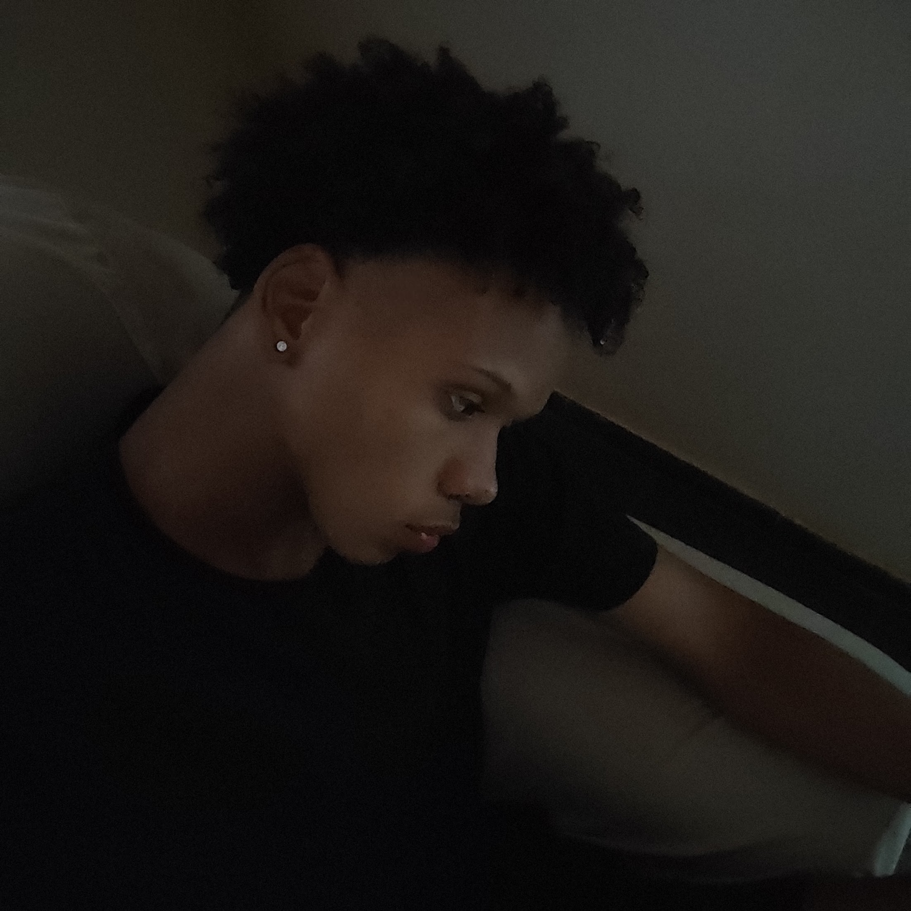

STATUS: ONLINE

Ideal para mercados e padarias. Seus produtos organizados e prontos para o cliente escolher.
Integração de pagamentos direto no site para automatizar suas vendas 24h por dia.
Páginas únicas focadas em um só objetivo: transformar visitantes em clientes de WhatsApp.
Presença digital de luxo com animações fluidas para passar autoridade total para sua marca.
Espaço personalizado para prestadores de serviço mostrarem seu trabalho com estilo.